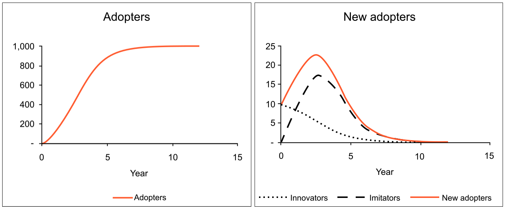
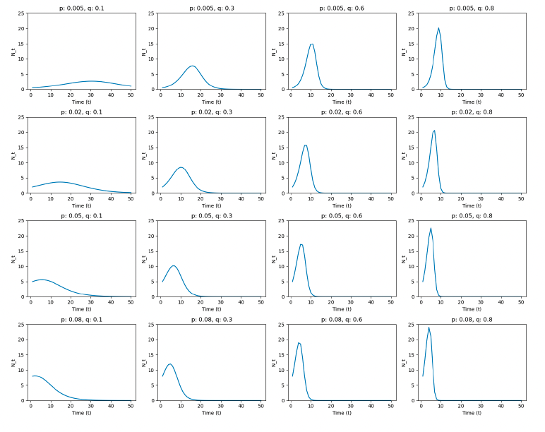

Bass Model for Demand Prediction
category_specifier : "Marketing Analytics"
Reference Docs: Linear Regression and Coefficient
Motivation

(Image source: Wikipedia)
- Demand over time (new adopted users) usually Increase → Peak → decrease (since number of population is limited)
- How can we estimate market demand of product, with given data?
- Objective: Assessing future demand, when will it peak and fall.
Framework
Settings
\[ M: \text{Market Size} \]
\[ N(t): \text{Number of new customers at time t} \]
\[ A(t) = \sum_{i=1}^{t-1}N(i): \text{Accumulative `already customers' prior to time t } \]
\[ R(T) = M - A(t): \text{Remaining customers at t} \]
\[ p : \text{Coefficient of innovation} \]
\[ q: \text{Coefficient of imitation} \]
Bass model is motivated by 'Hazard Rate'
- Hazard rate: Probability of event occurring ‘given that’ the event not already occurred: $$ H(t) = \frac{N(t)}{R(t)}$$, where $$
- In marketing context: Probability of becoming a customer, given that they are not customer yet.
- Bass model assume this is equal to: $$H(t) = p + q \frac{A(t)}{M} $$
- Interpretation : Innovation (customers make decision to use new product by themselves) + imitation (Imitate others' activity as product spread out) * ratio of already customers in the market.
Further Formulation
\[ H(t) = \frac{N(t)}{R(t)}= p + q \frac{A(t)}{M} \]
- Here, we can drive:
\[
N(t) = H(t) \times R(t) \\
= [p + q \frac{A(t)}{M}] \times R(t) \\
= Mp + (q-p)A(t) - \frac{q}{M}[A(t)]^2
\]
When we know p, q, M, we can predict the demand curve
- In this model, if we know variables \(M, p, q\):
- \(A(1) = 0, R(1) = M\) → Get the Initial value at time \(t\)
- Get \(H(t) = p + q \frac{A(t)}{M}\)
- Get \(N(t) = H(t) * R(t)\)
- \(N(1) = H(1) * R(1)\)
- Get \(A(t+1)\)
- Iterate over time series \(t\) to get future demand curve: \(A(2) = N(1) + A(1) = N(1)...\)
Takeaways

Interpretation of the curve
- Usually, \(p < q\) (imitation effect is larger)
- Most people are reluctant to adopt new things. They want validation until others buy, and test products. (conservative)
- There are 2 exceptional categories on this:
- Value itself is evident (e.g. : Electricity over traditional lights)
- Risk itself is so small (low cost): App download.
- Most common shape of the curve : Increase → Peak → Decrease
More about \(p, q\)
- \(p\) effects on earlier phase, \(q\) effects on later phase.
- Larger p: Peak of the curve become earlier (faster)
- Larger q: Reach to the peak faster (slope) and peak be higher
- They both impact slope (Speed of adoption)
4 Main utilization of the curve for marketing decisions
- How ‘high’ the curve peak will be
- How ‘shallow’ the curve is (Derivative. How fast growing it is)
- If curve is predicted to be shallow, outsourcing will be more effective.
- If the product is in Earlier / Later part of the curve (Innovator VS Imitators)
- If the curve is in early stage, target innovators. If not, target imitators.
- When will the curve end. (Prepare for the next generation product)
→ Decisions should be mostly made based on \(R\) (potential customers in market), not \(M\) (entire population in the market.)
How to estimate values of \(p, q, M\)
In bass model, p, q, M are unknown, and we need to predict those values
\[ N(t) = Mp + (q-p) * A(t) - \frac{q}{M}[A(t)]^2 \]
- The formulation above could be written as Linear Regression of variable \(A(t)\).
- Regress \(N(t) ~ A(t)\): \(N(t) = a + bA(t) + cA(t)^2\), by replacing \(a = Mp, b = (q-p), c = -\frac{q}{M}\)
- After getting a, b, c, we can reorganize:
- \(p = \frac{\sqrt{b^2-4ac}-b}{2}\)
- \(q = \frac{\sqrt{b^2-4ac}+b}{2}\)
- \(M = -q/c\)
- After having \(p, q, M\) value, extrapolate future values, as explained in previous section.
Caution: Do not get \(M\) from the regression - acquire from external source
- Bass model is very sensitive to errors: predicted curve will vary a lot given the data is impacted by variability.
- \(M\) is especially impacted a lot - \(p, q\) are not impacted as much as \(M\).
- Therefore, total market size \(M\) should better be estimated through external source - one example is using chain ratio method to estimate total market size.
Important takeaway
When \(M\) is sourced from outside, it becomes a fixed number. Therefore, the equation if not linear anymore, so there is no closed for solution.
Therefore, \(p, q\) value should be estimated using nonlinear regression techniques, with Python packages like Gradient based optimization method.